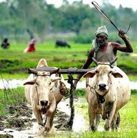

Agriculture Site
Home
Issues
Solutions
Donate
About
Contact
Farmers' Issues
Key Issues Faced by Farmers
Land Ownership:
Challenges with land rights and access to fertile land.
Water Scarcity:
Limited access to water for irrigation.
Crop Prices:
Unstable market prices affecting income.
Climate Change:
Impact of changing weather patterns on crop yield.
Access to Technology:
Limited access to modern agricultural tools and techniques.
Visual Representation of Issues
